輻射臂章發放 / 繳回 / 檢點工具
操作SOP（圖文版）
快速流程總覽（先看這 12 步）
- 匯入當月名單
- 確認名單顯示與欄位自動對應
- 選擇單月份 / 雙月份
- 切換發放模式
- 掃描本月臂章並按處理掃描
- 查看掃描結果與下方掃描紀錄
- 核對姓名、工號、部門後依部門裝袋
- 條碼不在名單內時，回上方名單補條碼、補備註、重刷一次
- 帶部門袋到櫃子交換上月臂章
- 切換繳回模式，掃描上月臂章並查看掃描紀錄
- 核對檢點數量與上月群組結果
- 匯出完整結果，更新本月名單
步驟目錄
步驟 1：匯入當月名單
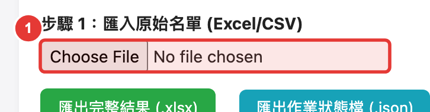
步驟 2：確認名單顯示與欄位自動對應
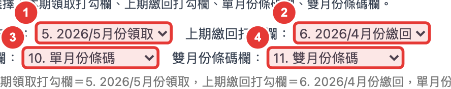
步驟 3：選擇本月單月 / 雙月
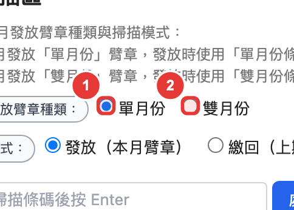
步驟 4：切換發放模式
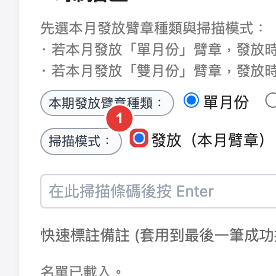
步驟 5：掃描後執行處理掃描
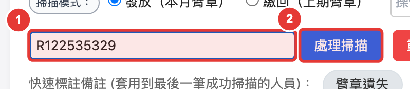
步驟 6：查看掃描結果與掃描紀錄
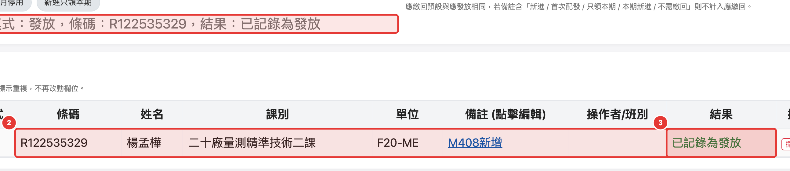
步驟 7：核對後依部門裝袋
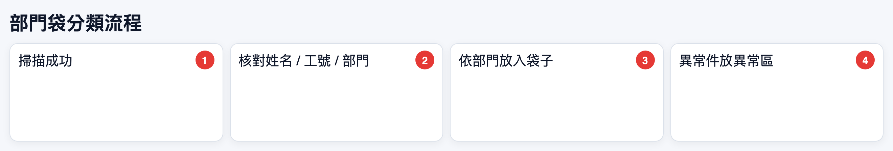
步驟 8：條碼不在名單內時（補碼、補備註、重刷）
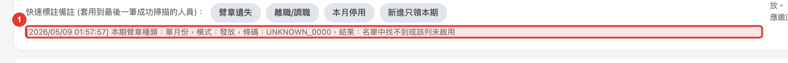
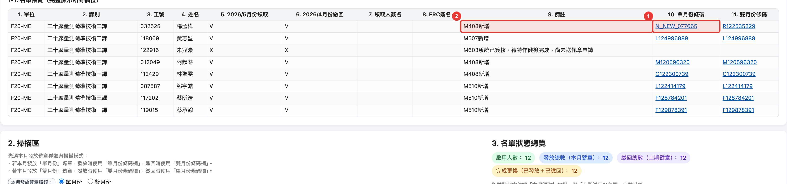
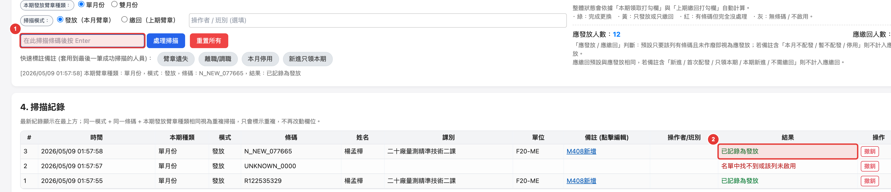
步驟 9：帶部門袋到櫃子交換上月臂章
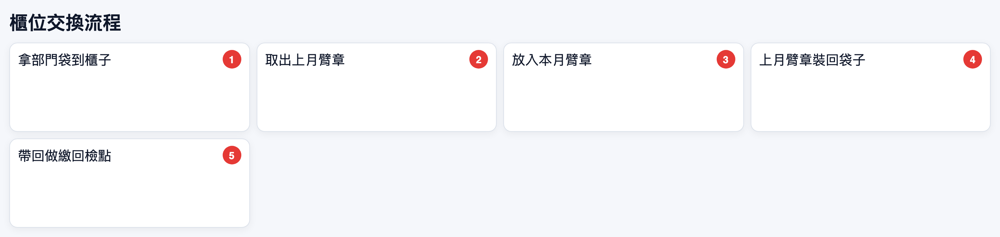
步驟 10：切換繳回模式並掃描上月臂章
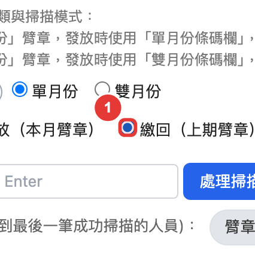
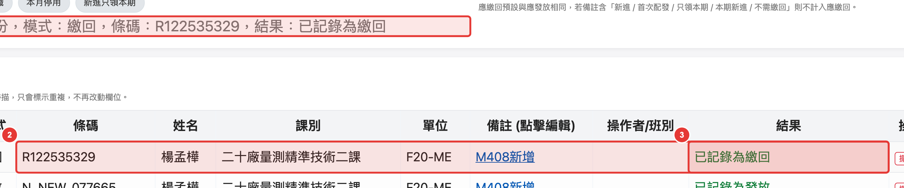
步驟 11：核對檢點數量
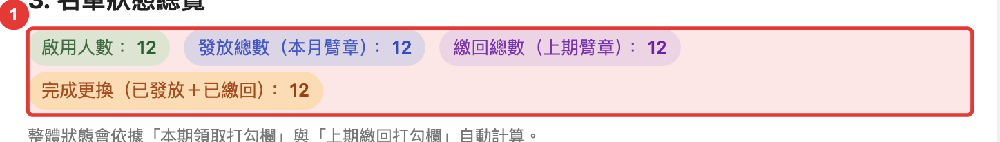
步驟 12：匯出完整結果並更新本月名單
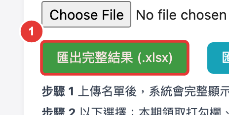
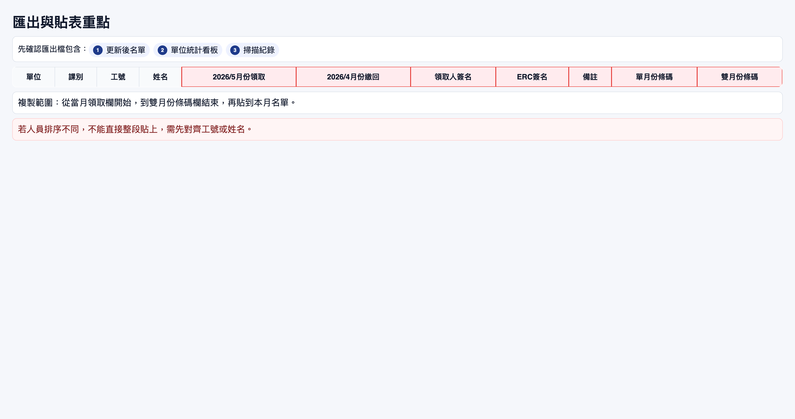
附錄 A：常見異常快速處理
| 異常 | 先做什麼 | 下一步 |
|---|---|---|
| 條碼不在名單內 | 先不要入袋 | 補條碼、補備註、重刷 |
| 結果顯示重複 | 確認是否已掃過 | 避免重複入袋 |
| 姓名/工號不一致 | 放異常區 | 人工核對後再處理 |
| 櫃位交換數量不符 | 先記錄異常 | 回報追查，不硬湊 |
附錄 B：每日 Checklist
作業前
- [ ] 已匯入當月名單
- [ ] 已確認名單顯示正常；必要時確認欄位對應
- [ ] 已確認本月單/雙月與發放模式
作業中
- [ ] 每筆都按處理掃描 / Enter
- [ ] 每筆都看掃描結果與掃描紀錄
- [ ] 本月新增已做補碼、補備註、重刷
收尾
- [ ] 已核對發放/繳回/完成更換/應發/應繳
- [ ] 已比對上月群組結果
- [ ] 已匯出並更新本月名單
附錄 C：5 分鐘快速版
- 匯入名單 → 確認名單顯示正常 → 選單雙月 → 選發放模式。
- 掃條碼後按處理掃描，確認結果與紀錄。
- 核對姓名/工號/部門後入袋。
- 不在名單內：補碼、補備註、重刷。
- 做櫃位交換，切繳回模式掃上月臂章。
- 核對數量後匯出，更新本月名單。